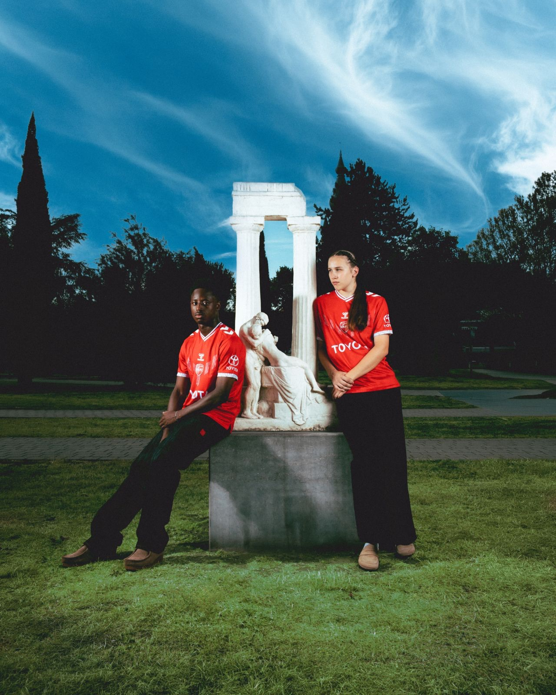
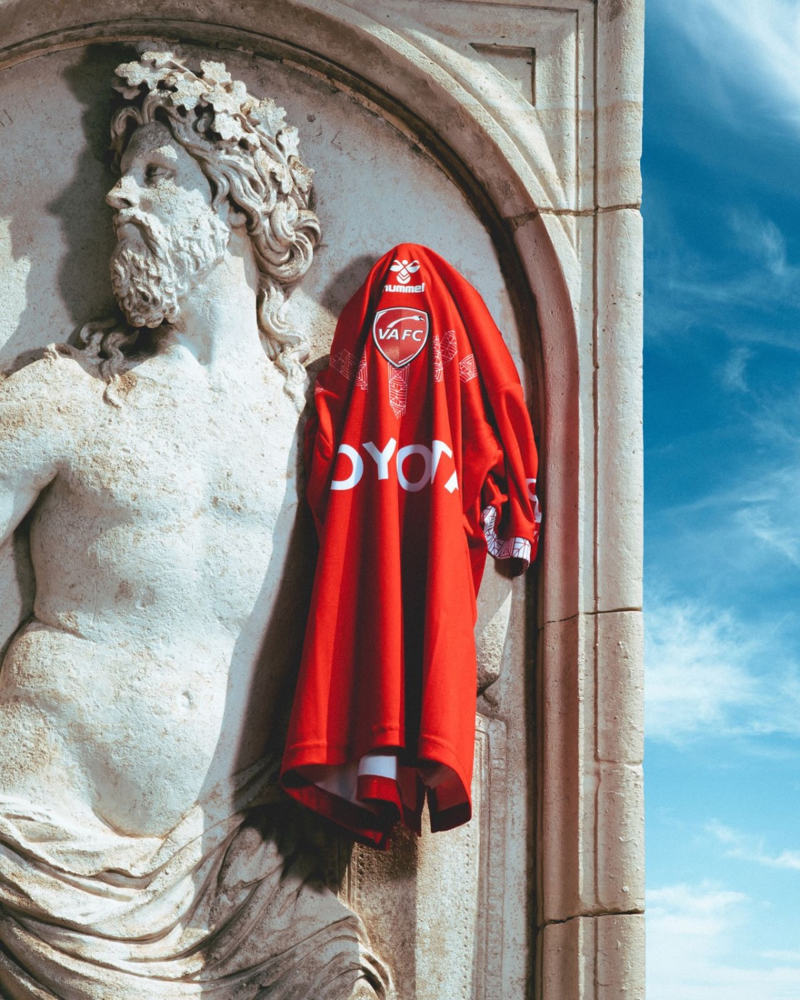
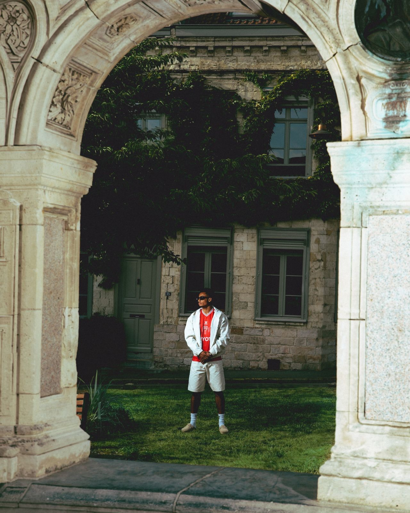
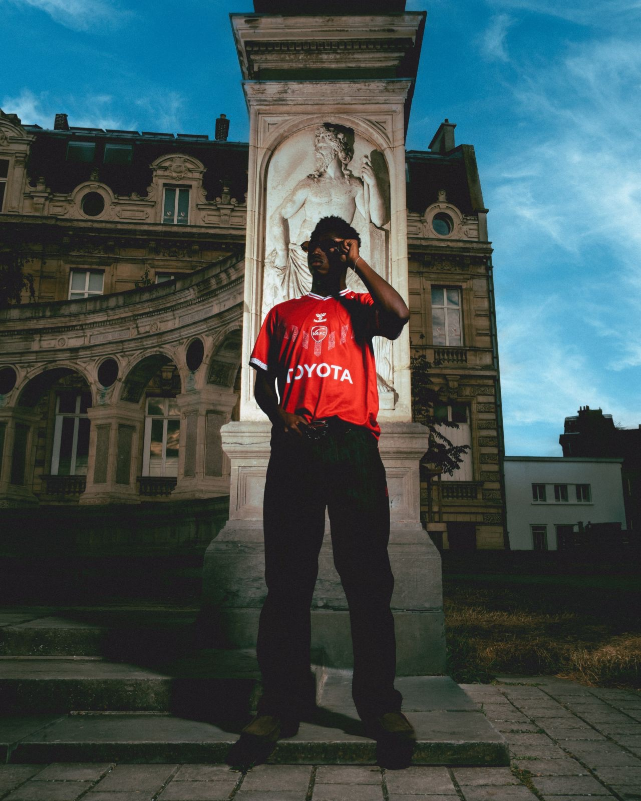

Le projet
On dit de Valenciennes que c'est l'Athènes du Nord. Ville de peintres, de sculpteurs, patrie de Carpeaux.
Pour le maillot domicile 2026 du VAFC, hummel a confié la campagne à Penalty Studio™ avec cette idée en tête. L'angle : sortir le maillot du terrain et le laisser traîner du côté du marbre. Colonnes, bas-reliefs, vieilles pierres et un peu d'haussmannien pour le décor.
Le rouge du VAFC vient réveiller tout ce beau monde figé depuis des siècles.


Mon rôle
Stylisme et assistante de production : deux casquettes sur un même projet.
Créditée au stylisme aux côtés de Penalty Studio™ et Paul-Loup G., j'ai participé à construire les silhouettes autour du maillot : faire exister le rouge du VAFC face au blanc du marbre et à la pierre, avec des tenues qui restent dans le ton de ce décor classique.
En parallèle, en tant qu'assistante de production, j'ai accompagné l'organisation du shooting et le suivi du plateau sur les différents lieux de Valenciennes.


Crédits
- Client
- hummel
- Agence & production
- Penalty Studio™
- Direction artistique
- Paul-Loup G.
Anthony Meghzel - Photographie
- Corentin Lesouef
- Lumières
- Bastien Vannoni
- Stylisme
- Penalty Studio™
Paul-Loup G.
Lola Verhas - Cast
- VAFC
- Production
- Paul-Loup G.
Guillaume Dumont - Assistante de production
- Lola Verhas
- Post-production
- Bastien Vannoni
- Lieu
- Valenciennes